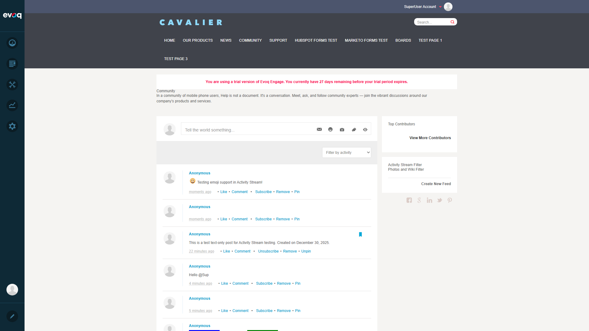
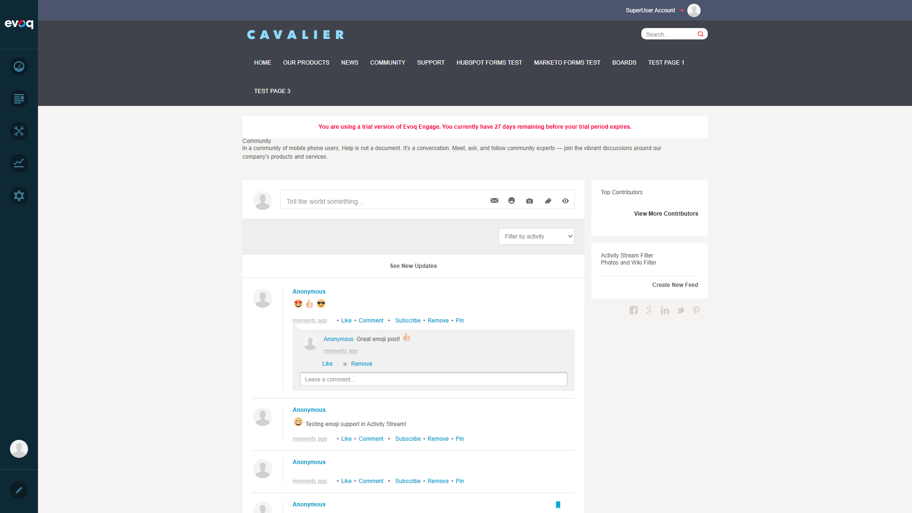

Insert emojis in posts and comments using emoji panel
Extension
Evoq.Social.ActivityStream (Module)
Extension Priority
High
Feature Priority
Medium
UI Location
Activity Stream > Create Post > Emoji Button
Dependencies
Post Creation, Commenting System
Test Scenario 1: Insert Emoji in Post
PASS
Objective
Verify that users can insert an emoji into a new post using the emoji panel.
Steps Taken
Navigated to the Community page with Activity Stream
Logged in as host (SuperUser)
Clicked on "Tell the world something..." post area to activate editor
Clicked the emoji button (smiley face icon) to open emoji panel
Selected the grinning face emoji (😀)
Added text "Testing emoji support in Activity Stream!"
Clicked Share to post
Screenshots
Step 1: Activity Stream page loaded
Step 2: Post editor area activated
Step 3: Emoji panel opened showing available emojis
Step 4: Emoji inserted into post text

Step 5: Post with emoji successfully created
Result
PASSED - Emoji was successfully inserted into the post and displayed correctly after posting.
Test Scenario 2: Insert Multiple Emojis
PASS
Objective
Verify that users can insert multiple emojis into a single post.
Steps Taken
Clicked on post area to activate editor
Opened emoji panel
Selected heart eyes emoji (😍)
Opened emoji panel again and selected thumbsup emoji (👍)
Opened emoji panel again and selected sunglasses emoji (😎)
Clicked Share to post
Screenshots
Step 1: Multiple emojis inserted into post
Step 2: Post with multiple emojis successfully created
Result
PASSED - Multiple emojis (😍👍😎) were successfully inserted and displayed correctly in the post.
Test Scenario 3: Insert Emoji in Comment
PASS
Objective
Verify that users can insert emojis into comments on posts.
Steps Taken
Clicked "Comment" link on an existing post
Comment input area appeared
Typed "Great emoji post! " in the comment field
Clicked the emoji button in the comment area
Selected thumbsup emoji (👍)
Clicked Reply to submit the comment
Screenshots
Step 1: Comment area opened on a post
Step 2: Emoji panel opened in comment area

Step 3: Comment with emoji successfully posted
Result
PASSED - Emoji was successfully inserted into a comment and displayed correctly after posting.
Test Scenario 4: Search for Emoji
N/A
Objective
Verify that users can search for specific emojis using a search feature.
Steps Taken
Opened the emoji panel
Examined the panel interface for a search input field
No search functionality was found
Screenshots
Emoji panel showing category-based navigation only (no search)
Result
N/A - FEATURE NOT IMPLEMENTED - The emoji panel does not include a search feature. It only supports category-based navigation through the category icons at the bottom of the panel (People, Nature, Food, Celebration, Activity, Travel, Objects).
Observation: The emoji panel uses the emojione library and provides category-based browsing. A search feature would enhance usability by allowing users to quickly find specific emojis.
Test Scenario 5: Switch Emoji Categories
PASS
Objective
Verify that users can switch between different emoji categories in the emoji panel.
Steps Taken
Opened the emoji panel (default shows People category)
Clicked on the tree icon (🌳) to switch to Nature category
Available settings: Enable Editor, Allow Files, Allow Photos, Max Files, View Filters, Grouping, Page Size, Max Message Length, Journal Filters
No emoji panel enable/disable setting exists
Screenshots
Community settings panel - no emoji-specific options available
Result
N/A - SETTING NOT AVAILABLE - The Activity Stream module does not provide a setting to enable or disable the emoji panel. The emoji panel is always available when the Activity Stream editor is active.
Observation: Based on code review of Settings.ascx, the available module settings are:
Enable Editor (checkbox)
Allow Files (checkbox)
Allow Photos (checkbox)
Max Files Per Journal (dropdown: 1-10)
Enable View Filters (checkbox)
Enable Grouping (checkbox)
Default Page Size (dropdown: 5-100)
Max Message Length (dropdown: 140-2000)
Journal Filters (checkbox list)
Adding an "Enable Emoji Panel" setting could be a feature enhancement.
Test Scenario 7: Verify Emoji Display Across Browsers
PASS
Objective
Verify that emojis display correctly using the emojione sprite system.
Verified emojis render as sprite images rather than native Unicode
Tested in Chromium-based browser (via Playwright)
Technical Details
The Activity Stream uses the emojione library which renders emojis as CSS sprite images. This ensures consistent emoji display across all browsers and operating systems, regardless of native emoji support.
Library: emojione (version from 06-11-2015)
Rendering: CSS sprite images from emojione.sprites.png
CSS Classes: .emojione-{unicode} for individual emoji sprites
Result
PASSED - Emojis display consistently using sprite images. All screenshots show proper emoji rendering with correct visual representation.
Test Summary
Test Scenario
Status
Notes
1. Insert emoji in post
PASS
Successfully inserted single emoji
2. Insert multiple emojis
PASS
Successfully inserted 3 emojis in one post
3. Insert emoji in comment
PASS
Emoji panel works in comment area
4. Search for emoji
N/A
Feature not implemented - only category browsing
5. Switch emoji categories
PASS
7 categories available and working
6. Disable emoji panel in settings
N/A
Setting not available in module configuration
7. Verify emoji display across browsers
PASS
Uses emojione sprites for consistent rendering
Overall Result
5 PASSED | 0 FAILED | 2 N/A
The Emoji Support feature is functioning correctly for its core functionality. The emoji panel allows users to insert emojis in posts and comments, with category-based browsing. Two suggested test scenarios (search and disable setting) are not applicable as those features are not implemented in the current version.
Recommendations
Enhancement: Consider adding a search/filter feature to the emoji panel for improved usability
Enhancement: Consider adding an "Enable Emoji Panel" setting to module configuration
Note: The emojione library version (2015) is dated - consider updating to a newer emoji library for more recent emoji support